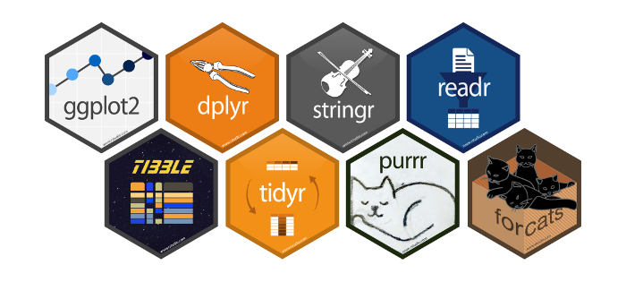

4.2 Tidyverse
“Tidy” + “Universe”의 조어로 “tidy data”의 기본 설계 철학, 문법 및 데이터 구조를 공유하는 RStudio 수석 과학자인 Hadley Wickham이 개발한 패키지 묶음(번들) 또는 메타 패키지로, 데이터 과학(data science)을 위한 R package를 표방 (Wickham 2019b)
데이터 분석 과정 중 가장 긴 시간을 할애하는 데이터 전처리(data preprocessing, data management, data wrangling, data munging 등으로 표현)를 위한 다양한 함수들을 제공하며, 특히 파이프(pipe) 연산자로 지칭되는
%>%를 통한 코드의 간결성 및 가독성을 최대화 하는 것이 tidyverse 패키지들의 특징Hadley Wickham이 주창한 Tidy Tools Manifesto에 따르면, tidyverse가 추구하는 프로그래밍 인터페이스에 대한 4 가지 원칙을 제시
기존 데이터의 구조를 재사용
파이프 연산자를 이용한 최대한 간결한 함수 작성
R의 특징 중 하나인 functional programming 수용
사람이 읽기 쉬운 프로그램으로 설계
- Tidyverse를 구성하는 주요 패키지(알파벳 순)
- dplyr: 가장 일반적인 데이터 가공 및 처리 해결을 위한 “동사”(함수)로 구성된 문법 제공
- forcat: 범주형 변수 처리를 위해 Rdml factor와 관련된 일반적인 문제 해결을 위한 함수 제공
- ggplot2: 그래픽 문법을 기반으로 2차원 그래픽을 생성하기 위해 고안된 시스템
- purrr: 함수 및 벡터의 반복 작업을 수행할 수 있는 도구를 제공
- readr: base R에서 제공하는 파일 입출력 함수보다 효율적인 성능을 갖는 입출력 함수로 구성
- stringr: 가능한 한 쉬운 방법으로 문자열을 다룰 수 있는 함수 제공
- tibble: Tidyverse에서 재해석한 데이터 프레임 형태로 tidyverse에서 다루는 데이터의 기본 형태
- tidyr: 데이터를 정리하고 “tidy data”를 도출하기 위한 일련의 함수 제공

- 그 밖에 유용한 tidyverse에 소속되어 있는 패키지
- haven: 타 통계 프로그램(SAS, SPSS, Stata)의 데이터 포멧 입출력 함수 제공
- readxl: Excel 파일 입력 함수 제공
- lubridate: 시간(년/월/일/시/분) 데이터 가공 및 연산 함수 제공
- magrittr: Tidyverse의 문법(함수)를 연결 시켜주는 파이프 연산자 제공. 예전에는 독립적인 패키지였으나 지금은 모든 tidyverse 패키지에 내장되어 있음
References
Wickham, Hadley. 2019b. Tidyverse: Easily Install and Load the ’Tidyverse’. https://CRAN.R-project.org/package=tidyverse.